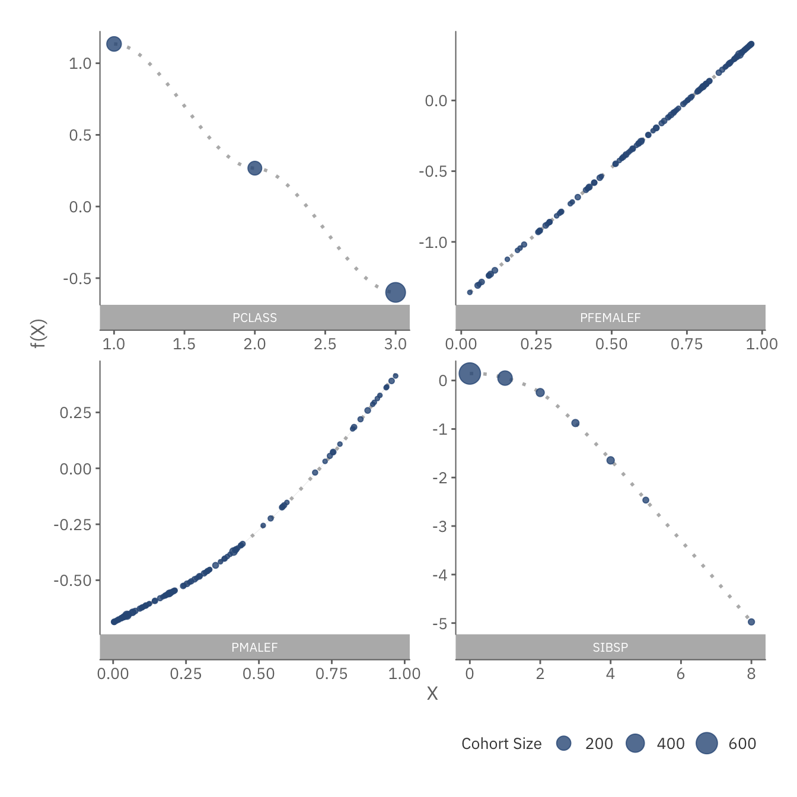

Estimating Survival Rate of Titanic Passengers
Problem Description
Set for its maiden voyage in 1912, RMS Titanic was then considered unsinkable due to its robust structure. After picking up passengers in Southampton, Cherbourg and Queenstown, the ship set sail towards New York. It was on their way there that Titanic met its calamitous fate, crashing into an Iceberg and rendering more than 50% of the passengers lost.
There were many question marks concerning the events leading to and during the disaster. One of which was who survived and why. Fortunately, details of all passengers, along with their survival status were recorded. By analyzing these records, we can potentially answer the question by:
- Creating a prediction model to assess a passenger’s survival likelihood (Who), and
- Understanding the factors causing a passenger to live (Why).
To skip the methodology and proceed directly to the summary of results, click here.
FYI: This problem was posed as an introductory challenge in Kaggle. The passengers are divided into two groups, one for training and the other for testing. The former contains both the passengers’ personal details and outcomes, while the latter only contains personal informaion. The aim of the project is to develop a robust model through the training set, and predict the survival of passengers in the testing set.
Preliminaries
First load the necessary packages for this exercise.
# Load default settings for R Markdown -- see file for more details
source("shared/defaults.R")
# Load some helper functions
source("shared/helper.R")
options(stringsAsFactors = FALSE)
load_or_install.packages("purrr","mgcv")
# Set default decimal points for percentage
data_dir <- "data/"
output_dir <- "output/"
si <- sessionInfo()
base_pkg_str <- paste0("Base Packages: ",paste(si[["basePkgs"]], collapse=", "))
attached_pkg_str <- paste0("Attached Packages: ",paste(names(si[["otherPkgs"]]), collapse=", "))
cat(paste0(base_pkg_str,"\n",attached_pkg_str))## Base Packages: stats, graphics, grDevices, utils, datasets, methods, base
## Attached Packages: mgcv, nlme, purrr, tidyr, pander, ggplot2, rlang, dplyr, knitrData Overview
We kick off by exploring the data that was provided:
training_set <- read.csv(paste0(data_dir, "train.csv"))
test_set <- read.csv(data_dir %|% "test.csv")
cols_summary <- data_overview(training_set)
pander(cols_summary, caption='Titanic Passengers Data - For more info, please visit <a href="https://www.kaggle.com/c/titanic/data" target="_blank">Kaggle</a>')| ColumnNames | Type | Examples | PctFilled |
|---|---|---|---|
| PassengerId | INTEGER | 1 // 2 // 3 // 4 // 5 | 100% |
| Survived | INTEGER | 0 // 1 | 100% |
| Pclass | INTEGER | 3 // 1 // 2 | 100% |
| Name | CHARACTER | Braund, Mr. Owen Harris // Cumings, Mrs. John Bradley (Florence Briggs Thayer) // Heikkinen, Miss. Laina // Futrelle, Mrs. Jacques Heath (Lily May Peel) // Allen, Mr. William Henry | 100% |
| Sex | CHARACTER | male // female | 100% |
| Age | NUMERIC | 22 // 38 // 26 // 35 // 54 | 80% |
| SibSp | INTEGER | 1 // 0 // 3 // 4 // 2 | 100% |
| Parch | INTEGER | 0 // 1 // 2 // 5 // 3 | 100% |
| Ticket | CHARACTER | A/5 21171 // PC 17599 // STON/O2. 3101282 // 113803 // 373450 | 100% |
| Fare | NUMERIC | 7.25 // 71.2833 // 7.925 // 53.1 // 8.05 | 100% |
| Cabin | CHARACTER | C85 // C123 // E46 // G6 // C103 | 22% |
| Embarked | CHARACTER | S // C // Q | 99% |
Based on the above table, we know that:
- Names are aggregated in the following format: Last_Name, Title First_Name. This suggests that some information needs to be extracted from certain columns.
- Columns such as Age and Cabin have missing data. This implies that we should either remove these columns, impute the data or build a model that handles missing information.
Feature Selection
The first step in creating a prediction model is to brainstorm possible factors, otherwise known as features, influencing survival likelihood.
Some features have been nicely provided by the dataset, such as:
| Feature | Variable Type | Description |
|---|---|---|
| Pclass | Continuous | Ticket Class |
| Sex | Categorical | Gender |
| Age | Continuous | Passenger’s Age |
| SibSp | Continuous | Number of Siblings on Board |
| Parch | Continuous | Number of Parents/Children on Board |
| Fare | Continuous | Ticket Fare |
| Embarked | Categorical | Place of Embarkation |
In addition to these base factors, we could also extract derived features which are further described below.
Titles
The Title of an individual is typically associated with his/her social status. We should expect those with higher titles to be given preference to lifeboats, and hence having higher survival likelihoods.
prefix <- function(l) { as.character(sapply(l, ..(x) %:=% { unlist(strsplit(unlist(strsplit(x, ", "))[2],"\\. "))[1] })) }
title_set <- training_set %>%
mutate(Title = prefix(Name))
# Find Titles that Have Sufficient Sample Size For Model Estimation (>10)
common_titles <- title_set %>%
group_by(Title) %>%
summarise(N=n()) %>%
filter(N > 10) %>%
select(Title) %>%
{ c(.$Title) }
title_plot <- training_set %>%
mutate(Title = ifelse(prefix(Name) %in% common_titles, prefix(Name), "Rare Title")) %>%
mutate(MaleSurvivalRate = sum(Sex == "male" & Survived == 1) / sum(Sex == "male"),
FemaleSurvivalRate = sum(Sex == "female" & Survived == 1) / sum(Sex == "female"),
MixedSurvivalRate = sum(Survived) / n()) %>%
group_by(Title) %>%
summarise(CohortSize = n(),
SurvivalRate = sum(Survived)/n(),
Gender = sum(Sex == "male")/n(),
MaleSurvivalRate = MaleSurvivalRate %>% max,
FemaleSurvivalRate = FemaleSurvivalRate %>% max,
MixedSurvivalRate = MixedSurvivalRate %>% max) %>%
mutate(Gender = ifelse(Gender == 0, "Female",
ifelse(Gender == 1, "Male", "Mixed")),
BaselineRate = recode(Gender, Female=FemaleSurvivalRate, Male=MaleSurvivalRate, Mixed=MixedSurvivalRate)) %>%
arrange(Gender, desc(SurvivalRate)) %>%
mutate(Title = factor(Title, levels=Title %>% unique)) %>%
{
ggplot(.,aes(x=Title, y=BaselineRate, fill=Gender)) +
theme_lk() +
geom_bar(stat="identity",
alpha = 0.2,
width = .5,
position=position_nudge(x=-0.25)) +
geom_tile(aes(y=(BaselineRate + (SurvivalRate - BaselineRate) / 2.),
height=SurvivalRate-BaselineRate),
width = .5,
fill = (.$SurvivalRate - .$BaselineRate >= 0) %?% `@c`(green) %:% `@c`(red),
position = position_nudge(x=+0.2)) +
geom_text(data=subset(.,SurvivalRate - BaselineRate >= 0),
aes(label = "+" %|% scales::percent(SurvivalRate - BaselineRate,1),
y = SurvivalRate + 0.02),
nudge_x = 0.2,
family = `@f`,
color = `@c`(green)) +
geom_text(data=subset(.,SurvivalRate - BaselineRate < 0),
aes(label = scales::percent(SurvivalRate - BaselineRate,1),
y = SurvivalRate - 0.02),
nudge_x = 0.2,
family = `@f`,
color = `@c`(red)) +
scale_fill_manual(name = "Baseline Survival Rate",
values = c("Male"= `@c`(blue),
"Female" =`@c`(red),
"Mixed" = `@c`(purple))) +
scale_y_continuous(name="Survival Likelihood",
labels=scales::percent_format(1),
expand=c(0,0,0.02,0))
}
feature_title <- function(Name) { ifelse(prefix(Name) %in% common_titles,
ifelse(prefix(Name) %in% c("Mr","Miss"),"Mr/Miss",prefix(Name)), "Rare Title") }
title_plot
The chart above confirms our suspicion, as those with more distinguished status, such as Master and Rare Title, are more likely to survive.
Family Size
The FamSize of an individual is the amount of family members on board (including the passenger). It is an interaction term from SibSp and Parch, and defined as \(FamSize = 1 + SibSp + Parch\). Assuming that everyone in the family has to stay together, we should expect those with larger family sizes to have higher likelihoods of dying.
feature_famsize <- function(Sibsp, Parch) { pmap(list(x=Sibsp, y=Parch), ..(x,y) %:=% { x + y + 1 }) %>% as.integer }
famsize_plot <- training_set %>%
mutate(FamSize = feature_famsize(SibSp, Parch)) %>%
{
ggplot(., aes(x=FamSize, fill=factor(Survived))) +
theme_lk() +
theme(
axis.ticks.y = element_blank(),
axis.text.y = element_blank()
) +
geom_density(color=NA, alpha=0.5, bw="bcv") +
scale_x_continuous(name="Family Size", expand=c(0,0), breaks=1:5*2) +
scale_y_continuous(name="Density", expand=c(0,0,0.02,0)) +
scale_fill_manual(name="Cohort Size", values=c(`1`=`@c`(1),`0`=`@c`(ltxt)),
labels=c(`1`="Survived",`0`="Died"))
}
famsize_plot
Interestingly, we notice that those with intermediate family sizes are more likely to survive. This could be due to the presence of children. In other words, if you have a child, you are more likely to be given a space in the lifeboat, as opposed to those who are by themselves.
Cabin Deck
The CabinDeck refers to the floor where an individual is staying. Based on external sources, Deck A corresponds to the highest floor (Promenade), while Deck G the lowest floor (Engine Room). Assuming that everyone was at his/her room during the time of crash, we should expect those nearest to the bridge to have an advantage in boarding the lifeboats.
deck_to_index <- c("A"=1,"B"=2,"C"=3,"D"=4,"E"=5,"F"=6,"G"=7)
feature_cabin_deck <- function(Cabin) {
lapply(Cabin, ..(c) %:=% {
# Get All Cabins Specified
decks <- strsplit(c %>% { gsub("[0-9]","",.) }," ") %>% unlist %>%
# Convert Cabins to Numeric
sapply(..(f) %:=% {
deck_to_index[f]
})
# Assume a Leave No Man Behind Approach,
# In other words, your chances of survival is dependent on
# the person with the worst deck in the group
(length(decks) == 0) %?% NA %:% (decks %>% as.integer %>% max)
}) %>% unlist
}
cabin_deck_plot <- training_set %>%
mutate(CabinDeck = feature_cabin_deck(Cabin)) %>%
filter(!is.na(CabinDeck)) %>%
{
ggplot(., aes(x=CabinDeck, fill=factor(Survived))) +
theme_lk() +
theme(
axis.ticks.y = element_blank(),
axis.text.y = element_blank()
) +
geom_density(color=NA, alpha=0.5, bw="bcv") +
scale_x_continuous(name="Cabin Deck", expand=c(0,0), breaks=deck_to_index, labels=setNames(names(deck_to_index),deck_to_index)) +
scale_y_continuous(name="Density", expand=c(0,0,0.02,0)) +
scale_fill_manual(name="Cohort Size", values=c(`1`=`@c`(1),`0`=`@c`(ltxt)),
labels=c(`1`="Survived",`0`="Died"))
}
cabin_deck_plot
As expected, those in Cabin B to F have higher chances of surviving than those in the highest and lowest floors.
Cabin Number
The CabinNo of an individual corresponds to the side that an individual stays in (left/right of the boat). According to Encyclopedia Titanica, even numbers are situated on the left side, while odd numbers are on the right side. Depending on where the damage was, passengers staying on the unaffected side may be more likely to stay alive during the impact.
feature_cabin_no <- function(Cabin) {
sapply(Cabin, ..(x) %:=% {
if (x == "") { return(NA) }
num <- as.integer(strsplit(gsub("[A-z]","",x)," ")[[1]]) %% 2
if (is.nan(mean(num)) | length(which(num==0)) == length(which(num==1))) {
return(NA)
} else {
# Check if there is more even cabins or odd cabins
if (length(which(num==0)) >= length(which(num==1))) { return("Even") } else { return("Odd") }
}
})
}
cabin_number_plot <- training_set %>%
mutate(CabinNo = feature_cabin_no(Cabin),
CabinNo = ifelse(is.na(CabinNo),"Unspecified",CabinNo)) %>%
group_by(CabinNo) %>%
summarise(CohortSize = n(),
SurvivalRate = sum(Survived)/n()) %>%
mutate(CabinNo = factor(CabinNo, levels=c("Even","Odd","Unspecified"))) %>%
{
ggplot(., aes(x = SurvivalRate,y = 0,color=CabinNo,size=CohortSize)) +
theme_lk() +
theme(plot.margin = unit(c(0,0,0,-40),'pt'),
legend.position = c(1.,0.05),
legend.box.just = "center",
axis.line.x = element_line(colour=NA),
axis.ticks.x = element_line(colour=NA),
axis.title.x = element_blank(),
axis.text.x = element_blank(),
axis.line.y = element_line(colour=NA),
axis.ticks.y = element_line(colour=NA),
axis.title.y = element_blank(),
axis.text.y = element_blank()
) +
scale_color_manual(name = "Room Type",
values = `@c`(),
guide = guide_legend(order = 1,override.aes=list(size=5),
nrow= 1)) +
scale_size_continuous(name = "Cohort Size",
range = c(5,20),breaks=c(100,300,600),
guide = guide_legend(order = 2,override.aes=list(alpha=0.5), nrow=1)) +
# Add X Axis Line
geom_segment(data = data.frame(1),aes(x=0.25, xend=0.8, y=0, yend=0),
size = 0.5,color=alpha(`@c`(ltxt),0.5),
arrow = arrow(length = unit(10,"pt"),type = "closed")) +
geom_text(data = data.frame(1),label = "Survival Likelihood",
x = 0.8,y = 0.02,family = `@f`,color = `@c`(ltxt),
size = 4.5,hjust = 1) +
scale_y_continuous(limits=c(-0.12, 0.05)) +
geom_point() +
geom_text(aes(y = c(-0.025,-0.02,-0.04), label=paste0(round(SurvivalRate*100,0),"%")),
size=4,color=`@c`(txt),family=`@f`)
}
cabin_number_plot
From the chart, it seems that those on the right side are more likely to survive, confirming our previous hypothesis.
Feature Summary
To summarise, all of the features, along with their relationship to survival status, are shown below. Based on observation, it seems that both Sex and Pclass will play dominant roles in estimating survival likelihood.
Continuous Features
preprocess_data <- function(data) {
passengerIds <-data$PassengerId
data <- data %>%
mutate(Title=feature_title(Name),
FamSize=feature_famsize(SibSp, Parch),
CabinDeck=feature_cabin_deck(Cabin),
CabinNo=feature_cabin_no(Cabin)) %>%
select(-Name, -Ticket, -Cabin) %>%
# Substitute unknown continuous features with -1
mutate_if(is.numeric,
~ map(., ~ if (is.na(.)) { -1 } else {.}) %>% unlist) %>%
# Substitute unknown discrete features with "-"
mutate_if(~ !is.numeric(.),
~ map(., ~ if (is.na(.) | . == "") { "-"} else {.}) %>% unlist) %>%
# Set Factors for Discrete Features
mutate_if(~ !is.numeric(.),
~ factor(., levels=unique(c("-",.))))
rownames(data) <- passengerIds
data
}
features <- preprocess_data(training_set)
test_features <- preprocess_data(test_set)
suppressMessages({
snapshot <- data_snapshot(features %>% select(-PassengerId) %>% mutate(Survived = Survived %>% factor), Survived,
cont_geom = geom_density(color=NA, alpha=0.5, bw="bcv"),
misc_layers = scale_fill_manual(name = "Status",
values=c(`0`=`@c`(ltxt,0.5),`1`=`@c`(1)),
labels=c(`0`="Died",`1`="Survived")))
})
plot(snapshot$cont_plot)
Categorical Features
plot(snapshot$disc_plot)Modeling Survival Likelihood
Model Selection
After finalizing our list of features, we now have to choose the most appropriate model for this analysis. Based on our objectives, the model must be:
- Predictive: The model should predict survival likelihood accurately. This criteria excludes more simple models, such as Linear Regression, which is known to have high biases.
- Interpretable: The model should explain the relationships between features and survival status. This prevents us from selecting less interpretable models such as Random Forests, Gradient Boosting Trees or SVMs.
- Robust: The model should manage missing values effectively.
Due to these criterias, the Generalized Additive Model (GAM) will be used as our base. In particular, a GAM has the form:
\[Y = \ln(\frac{p}{1-p}) = \beta_0 + \sum_i f_i(x_i) \]
where
\(p\) is the survival
likelihood,
\(\beta_0\) is the
average of \(Y\),
\(f_i\) is a smooth function of the feature
\(i\), and
\(x_i\) is the value of feature \(i\).
In addition, we will also be making the following adjustments to the GAM model:
- Missing Values: All \(f_i(\)Missing\()\) will have a value of \(0\). This ensures that missing factors will not influence a passenger’s survival prediction.
- Forward Selection: Earlier on, we have chosen over 10 features for the model, some of which may be irrelevant. To exclude such features, we will fit each predictor into the model iteratively. At the end, the number of features to be used for prediction will be determined via cross validation.
Embedding Survival Relationships
One of the major issues with GAM is the failure to encode relationships amongst passengers. For instance, a mother’s survival status could highly depend on the child’s. To account for these factors, we introduce two hidden features in the model:
- PfemaleM: The probability that a passenger’s female family member will survive, and
- PmaleM: The probability that a passenger’s male family member will survive.
To estimate the two features, we first need the survival likelihood of every individual. Each individual’s family can then be identified through his/her last name, passenger class and port of embarkation. The survival likelihoods of family members are then averaged across Sex to obtain PfemaleM and PmaleM respectively.
lastName <- function(l) { as.character(sapply(l, ..(x) %:=% { (unlist(strsplit(x, ", "))[[1]]) })) }
complete_dataset <- rbind(features %>% select(-Survived), test_features)
feature_fam_survivalhood <- function(p_survival) {
# Calculate each family member's probability of survival
indiv_survivalhood <- complete_dataset %>%
cbind(FamID=c(training_set$Name,test_set$Name) %>% lastName) %>%
mutate(FamID= FamID %|% "_" %|% Pclass %|% "_" %|% Embarked) %>%
mutate(PSurvival = p_survival) %>%
select(PassengerId, Sex, FamID, PSurvival)
# Find the probability of the passenger's family members surviving (excluding the passenger him/herself),
# separated by gender
updated_dataset <- indiv_survivalhood %>%
select(PassengerIdBase=PassengerId, FamID) %>%
inner_join(indiv_survivalhood, by="FamID") %>%
mutate(FamPSurvived = ifelse(PassengerId == PassengerIdBase, NA, PSurvival)) %>%
select(PassengerId = PassengerIdBase, Sex, FamPSurvived) %>%
group_by(PassengerId, Sex) %>%
summarise(FamPSurvived = mean(FamPSurvived, na.rm =TRUE)) %>%
ungroup() %>%
mutate(Sex = "P" %|% Sex %|% "F") %>%
spread(key="Sex", value="FamPSurvived")
updated_dataset[is.na(updated_dataset)] <- -1
updated_dataset
}Assuming the existence of survival likelihoods, the GAM model can be generated with the formula:
\[Y = \ln(\frac{p}{1-p}) = \beta_0 + \sum_i f_i(x_i) + f_f(p_{fem}) + f_m(p_{male}) \]
where
\(p_{fem}\) is the
survival likelihood of a female family member,
\(p_{male}\) is the survival likelihood of a
male family member,
and \(f_f,
f_m\) are the smooth functions for both.
The biggest challenge in generating this model is recursion. The hidden features require survival likelihoods from the model, which in turn requires the hidden features. Fortunately, we can break this chain by assuming that the existence of an equilibrium \(\hat{p}\) where:
\[ \ln(\frac{\hat{p}}{1-\hat{p}}) - \beta_0 - \sum_i f_i(x_i) = f_f(p_{fem}(\hat{p})) + f_m(p_{male}(\hat{p})) \]
Assuming convergence, \(\hat{p}\)
can be determined via the following algorithm:
Initialize:
DATA :=
(x_1, x_2, …, x_k)
MODEL := GAM(DATA)
PREV_P := PREDICT(MODEL)
# Use 10 Iterations for Convergence
for i in [1,10]:
(p_female, p_male) <- GET_HIDDEN_FEATURE(PREV_P)
DATA <-
(x_1, x_2, … , x_k, p_female, p_male)
MODEL <- GAM(DATA)
P <- PREDICT(MODEL)
if (SUM{(P - PREV_P)^2} < 0.0001)
BREAK
else PREV_P <- P
RETURN MODEL
Model Implementation
The Adjusted GAM is implemented using the code below.
predict.mod_gam <- function(object, newdata, type="link", threshold=0.5, ...) {
# There is a Bug in GAM where if we use "by", predict will crash with the following error message:
# newdata is a model.frame: it should contain all required variables
# This is an attempt to fix that
gp <- interpret.gam(object$formula)
# if new data has no Survived column, append to fix the bug
if (!("Survived" %in% colnames(newdata))) {
newdata[,"Survived"] <- rep(-999,nrow(newdata))
}
# Append recursive features of the model
if (!is.null(object$rec_features)) {
newdata <- newdata %>%
inner_join(object$RecFeatureData %>% select(c("PassengerId",object$rec_features)), by="PassengerId")
}
newdata <- model.frame(gp$fake.formula, newdata)
if (type == "class") {
(predict.gam(object=object, newdata=newdata, type="response", ...) >= threshold) * 1
} else {
predict.gam(object=object, newdata=newdata, type=type, ...)
}
}
mod.gam <- function(data) {
all_features <- data %>% select(-Survived, -PassengerId)
disc_vars <- all_features %>% select_if(~ !is.numeric(.)) %>% colnames
# 1. Handling Missing Values: We specify a by constraint for each smoothing spline to ensure that
# f(NA) = 0
cont_to_spline <- function(v, dt = data) {
map(v, ~ "s(" %|% . %|%
", k=" %|% { (length(unique(dt[,.])) >= 10) %?% -1 %:% length(unique(dt[,.]) %>% {.[. != -1]}) } %|%
" ,by=(" %|% . %|% " >= 0)*1)") %>% unlist
}
cont_vars <- all_features %>% select_if(is.numeric) %>% colnames %>% cont_to_spline(dt = data)
# Helper Function to Build Modified GAM Model
build_gam(vars, dt=data) %:=% {
all_vars <- vars %>% paste0(collapse=" + ")
m.gam <- gam("Survived ~ " %|% all_vars %>% as.formula, data=dt, family="binomial")
class(m.gam) <- c("mod_gam",class(m.gam))
if (max(summary(m.gam)$p.table[,2]) >= 10) { warning("High Standard Errors.") }
m.gam
}
# 2. Perform Forward Selection: Chi square statistic is the measure chosen
cur_vars <- c()
rem_vars <- c(cont_vars,disc_vars)
last.gam <- build_gam(c("1"))
for (i in 1:length(rem_vars)) {
# We attempt to find out which variables to put in next.
# There are three extreme cases where we want to prevent the particular
# var from being inserted
# 1. If GAM calibration returns an error
# 2. If GAM calibration returns a warning (often no convergence)
# 3. If GAM calibration results in high standard errors
chi_sq <- sapply(rem_vars, ..(v) %:=% {
tryCatch({
m.gam <- build_gam(c(cur_vars,v));
(last.gam$deviance - m.gam$deviance) / ((m.gam$edf %>% sum) - (last.gam$edf %>% sum)) },
warning= ..(e) %:=% { return(-Inf) },
error= ..(e) %:=% { return(-Inf) })
})
# If all of the remaining vars cause errors, terminate forward selection
if (max(chi_sq) == -Inf) { break }
best.var <- chi_sq %>% which.max %>% names
cur_vars <- c(cur_vars, best.var)
rem_vars <- rem_vars[rem_vars != best.var]
last.gam <- suppressWarnings(build_gam(cur_vars))
}
lapply(1:length(c(cont_vars, disc_vars)), ..(i) %:=% {
if (i > length(cur_vars)) { return(NULL) }
# 3. Recursive Fitting: Use Other Family Member's Probabilities to sharpen the estimation
# of the passenger's probability
base_training <- data
base_model <- build_gam(cur_vars[1:i])
last_p <- predict(base_model, complete_dataset, type="response")
tryCatch({
cat("Starting Recursive Feature Fitting for " %|% i %|% "-Feature...\n")
for (it in 1:10) {
# Get the Feature for all the dataset
fam_survivalhood <- feature_fam_survivalhood(last_p)
rec_features <- colnames(fam_survivalhood %>% select(-PassengerId))
# Reset the Feature to the latest one
if (any(rec_features %in% colnames(base_training))) {
base_training <- base_training %>% select(-all_of(rec_features))
}
base_training <- base_training %>% inner_join(fam_survivalhood, by="PassengerId")
# Build the model based on the latest feature
base_model <- build_gam(c(cur_vars[1:i],cont_to_spline(rec_features, dt=base_training)),dt = base_training)
base_model$rec_features <- rec_features
base_model$RecFeatureData <- fam_survivalhood
p_survival <- predict(base_model, complete_dataset, type="response")
# If the model has converged in terms of deviance, stop, otherwise continue iterating
improvement <- ((p_survival - last_p)^ 2 %>% mean) * 10^4
cat("\tIteration " %|% it %|% ": " %|% improvement %|% "\n")
if (abs(improvement) <= 1) {
cat("\tAlgorithm has converged!\n")
break
} else {
last_p <- p_survival
}
}
}, error= ..(e) %:=% { print(e) })
# 4. Return Model
return(base_model)
})
}
m.gam <- cache("m_gam", list(), ..() %:=% { mod.gam(features) })
highest_idx <- which(sapply(1:length(m.gam), ..(g) %:=% { !is.null(m.gam[[g]]) })) %>% max
f_list <- m.gam[[highest_idx]]$formula %>% as.character %>% {.[3] } %>% strsplit(" \\+ ") %>% unlist %>% { gsub(",[A-Za-z()0-9>=\\* -]*|s\\(","",.) } %>% { .[!(. %in% c("PmaleF","PfemaleF"))] }
cat("List of Features in Order of Selection: \n", paste0(f_list,collapse=", "))## List of Features in Order of Selection:
## Sex, Pclass, Title, SibSp, Parch, Age, CabinNo, FamSize, Fare, CabinDeckListed above are features of the model, sorted by the order they were selected. For instance, Sex was chosen first, followed by Pclass and Title. This strengthens our hypothesis that both Sex and Pclass are strong signals for survivability.
Performance
To ensure the model is accurate, we need to find the optimal values for these two hyper-parameters:
- Number of Features: The number of features used in prediction, and
- Threshold: The boundary that determines if a passenger is tagged as a survivor. For instance if a passenger has a 45% probability of surviving, the model may tag him/her as alive if the threshold is 30%, but dead if the threshold is 50%.
# Create Cross Validation Function
cv.mod.gam <- function(formula, train, test) {
# 1. Generate Modified GAM Models
gams <- mod.gam(train)
# 2. Get the MSE's for each GAM Model at different thresholds
output <- list()
cur_env <- environment()
thresholds <- 1:19*0.05
walk(thresholds, ..(t) %:=% {
err_rates <- sapply(gams, ..(i) %:=% {
if (is.null(i)) { return(Inf) }
{ predict(i, test, type="class", threshold = t) != test$Survived } %>%
{ length(which(.)) / length(.) }
})
names(err_rates) <- t %|% "," %|% 1:length(err_rates)
assign("output",append(output, err_rates), envir = cur_env)
})
output
}
# Run Cross Validation With Different Folds
# 5-Fold Focuses more on Variance Error while 10-Fold Focuses more on Bias Error
res.cv <- cache("res_cv", list(), ..() %:=% {
crossValidation(learner("cv.mod.gam"),
dataset(Survived ~ ., features),
cvSettings(s = 1))
}) %>%
# Reformat CV Results Into a Table
{ tmp_tbl <- .@foldResults %>% as.data.frame
tmp_tbl[,"Fold"] <- rownames(tmp_tbl)
tmp_tbl } %>%
gather("Params","Err_Rate",-Fold) %>%
mutate(Err_Rate = Err_Rate %>% unlist) %>%
group_by(Params) %>%
summarise(MER = mean(Err_Rate),
SE = sd(Err_Rate)/sqrt(n()))
res.cv[,"Threshold"] <- map(res.cv$Params, ~strsplit(.,",")[[1]][1]) %>% unlist %>% as.numeric
res.cv[,"N_Params"] <- map(res.cv$Params, ~strsplit(.,",")[[1]][2]) %>% unlist %>% as.numeric
opt.row <- res.cv %>% arrange(MER) %>% { .[1,] }
opt.threshold <- opt.row$Threshold
opt.n <- opt.row$N_Params
opt.gam <- m.gam[[opt.n]]
opt.gam$threshold <- opt.threshold
cv_plot <- ggplot(res.cv %>% filter(MER != Inf & Threshold >= 0.25 & Threshold <= 0.75),
aes(x=N_Params, y=Threshold)) +
theme_lk() +
geom_tile(aes(alpha=ifelse(Threshold == opt.threshold & N_Params == opt.n, 99,MER),
fill=ifelse(Threshold == opt.threshold & N_Params == opt.n, "Optimal",NA))) +
geom_text(data=res.cv %>% subset((Threshold == opt.threshold & N_Params == opt.n)),
aes(label="Optimal"),
alpha = 1.,
color = `@c`(bg),
family = `@f`) +
scale_x_continuous(name = "Number of Features (Surfaced + Hidden)", breaks = 1:4 * 2,
expand = c(0,0),
labels= (1:4 * 2) %|% " + 2") +
scale_y_continuous(name = "Threshold", labels=scales::percent_format(1),
expand = c(0,0)) +
scale_alpha_continuous(name="CV Error Rate", range=c(0.05,1),
limits=c(NA,0.25), na.value=1,
labels=scales::percent_format(1),
guide=guide_legend(override.aes=list(fill=`@c`(ltxt,0.8)))) +
scale_fill_manual(values=`@c`(green), na.value=`@c`(txt,0.8),
guide="none")
cv_plot
Based on the CV error rate, the optimal model is one with 4 + 2 features and 55% threshold.
save_predictions <- function(m.gam, id="opt") {
p_y <- predict(m.gam, test_features, type="class", threshold=m.gam$threshold)
predictions <- cbind(test_set %>% select(PassengerId), Survived=p_y)
write.csv(predictions,
file=paste0(output_dir,id,"_submission.csv"),
row.names = FALSE)
}
save_predictions(opt.gam)
cat(paste0("Null Classifier\tTest Error Rate: ", scales::percent(1.-0.62679),"\n",
"Optimal GAM\t\tTest Error Rate: ", scales::percent(1.-0.79904),"\n"))## Null Classifier Test Error Rate: 37%
## Optimal GAM Test Error Rate: 20%Using Kaggle’s test set, the model has significantly higher predictive power over the null classifier. In fact, it is ranked near the 15th percentile* of Kaggle’s Leaderboard!
*at time of submission
Interpretation
threshold_plot <- res.cv %>% filter(N_Params == opt.n) %>%
{
ggplot(., aes(x=Threshold, y=MER)) +
theme_lk() +
geom_point(aes(color=Threshold != opt.threshold,
shape = Threshold != opt.threshold,
size = Threshold != opt.threshold),
show.legend=FALSE) +
scale_color_manual(values=c(`@c`(red),`@c`(ltxt,0.5))) +
scale_shape_manual(values=c(4,16)) +
scale_size_manual(values=c(5,3)) +
geom_smooth(color=`@c`(1), fill=`@c`(ltxt,0.2), method='loess') +
scale_x_continuous(labels=scales::percent_format(1)) +
scale_y_continuous(name="CV Error Rate", labels=scales::percent_format(1))
}
threshold_plot## `geom_smooth()` using formula = 'y ~ x'The above chart shows how a 4+2-feature model performs as we adjust the threshold. Other than the fact that the most optimal threshold is 55%, we also see that the curve remains relatively flat from 25% to 75%. This suggests that the model is relatively pure. In other words, it is more likely to predict a high/low likelihood of surviving, rather than a toss up situation where a passenger has a 51%-49% survival-death rate.
coeffs <- predict(opt.gam, features, type = "terms") %>% as.data.frame %>%
mutate(ID = rownames(.)) %>%
gather("Feature","Val",-ID) %>%
mutate(Feature = gsub(":[A-Za-z()>=0-9\\* ]*|\\)|s\\(","",Feature))
x_vals <- features %>%
inner_join(opt.gam$RecFeatureData, by="PassengerId") %>%
mutate(ID = rownames(features)) %>%
gather("Feature","X",-ID)
x_f_raw <- coeffs %>%
inner_join(x_vals, by=c("ID","Feature"))
x_f_tbl <- x_f_raw %>%
select(Feature, X, Val) %>%
filter(X != -1) %>%
group_by(Feature, X, Val) %>%
summarise(CohortSize=n()) %>%
ungroup() %>%
arrange(Feature, X)## `summarise()` has regrouped the output.
## ℹ Summaries were computed grouped by Feature, X, and Val.
## ℹ Output is grouped by Feature and X.
## ℹ Use `summarise(.groups = "drop_last")` to silence this message.
## ℹ Use `summarise(.by = c(Feature, X, Val))` for per-operation grouping
## (`?dplyr::dplyr_by`) instead.cont_tbl <- x_f_tbl %>%
filter(grepl("[0-9\\.]+",X)) %>%
mutate(X = X %>% as.numeric)
cont_plot <- ggplot(cont_tbl, aes(x=X, y=Val)) +
geom_smooth(aes(weight=CohortSize), color=`@c`(ltxt,0.5),
linetype="dotted", method="loess") +
geom_point(aes(size=CohortSize), color=`@c`(1), alpha=0.8) +
theme_lk() +
scale_size_continuous(name="Cohort Size") +
scale_y_continuous(name="f(X)") +
facet_wrap(~toupper(Feature), ncol=2, scales="free", strip.position = "bottom")
cont_plot## `geom_smooth()` using formula = 'y ~ x'
The plots above show the function \(f_i\) for each continuous feature. All 4 plots suggest a close to linear relationship for \(f_i\). This implies that linear models might perform relatively well too. It is also worth noting that having 1 or 2 siblings does not affect survivalhood significantly, but any more than that does.
discr_tbl <- x_f_tbl %>%
filter(!grepl("[0-9\\.]+",X)) %>%
arrange(Feature, desc(Val)) %>%
mutate(X = factor(X, levels=unique(X)))
discr_plot <- ggplot(discr_tbl, aes(x=X, y=Val)) +
theme_lk() +
geom_col(fill=`@c`(1,0.5), color=`@c`(1)) +
scale_y_continuous(name="f(X)", expand=c(0,0,0.01,0)) +
facet_wrap(~toupper(Feature), ncol=2, scales="free_x", strip.position = "bottom")
discr_plotSimilarly, the plots above show the equivalent for discrete features. As before, we can deduce that females and passengers with distinguished titles are more likely to survive.
imp_tbl <- x_f_raw %>%
group_by(Feature) %>%
#Normalize all features so that the weighted sum of f(feature) = 0
mutate(Val = abs(Val - sum(Val)/n())) %>%
ungroup() %>% group_by(ID) %>%
mutate(PctImpt = Val / sum(Val)) %>%
group_by(Feature) %>%
summarise(PctImpt = mean(PctImpt)) %>%
arrange(PctImpt) %>%
mutate(Feature = factor(Feature, levels=Feature))
imp_plot <- ggplot(imp_tbl, aes(fill=Feature, x=1, y=PctImpt)) +
theme_void() +
theme_lk(fmt_x = FALSE, fmt_y = FALSE) +
geom_col(position = position_stack(vjust = .5),
width=0.7, show.legend = FALSE) +
geom_text(aes(label=Feature,x=0.4),
size=3.5,
position = position_stack(vjust = .5),
family = `@f`,
color = `@c`(txt),
angle = 90,
hjust = 1.) +
geom_text(aes(label=scales::percent_format(1)(round(..y..,2))),
position = position_stack(vjust = .5),
family = `@f`,
color = `@c`(bg)) +
scale_fill_manual(values=`@c`(palette)(6) %>% rev) +
lims(x = c(-0.5,NA)) +
coord_flip()
imp_plotThe chart above shows the strength of each feature relative to one another. As can be seen, both Sex and Pclass contribute over 60% to the prediction! This confirms our hypothesis that both Sex and Pclass are important factors of survivability.
Summary of Results
Using data from the demographics and outcomes of titanic passengers, we have created a prediction model that performs near the 15th percentile of Kaggle’s Leaderboard. In addition, we have also identified the factors that determine each passenger’s survival status. These factors, ranked by importance, are:
- Sex: Females are more likely to survive than males.
- Passenger Class: Premium passengers accrue additional benefits, including preferential access to the lifeboats.
- Title: Someone with an esteemed title have more privileges than a lay individual.
- Survivalhood of Family Members: A passenger’s survival likelihood is influenced by those with him/her.
- No. of Siblings: The higher the number of siblings, the more likely one will die.